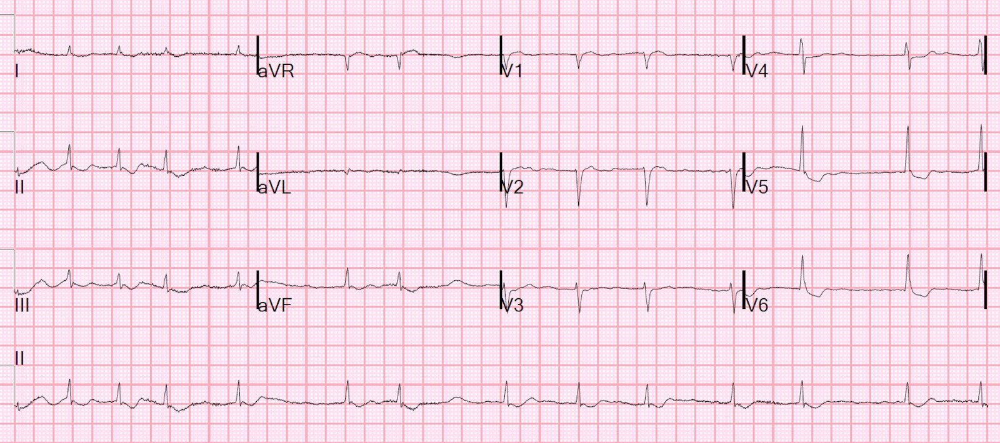
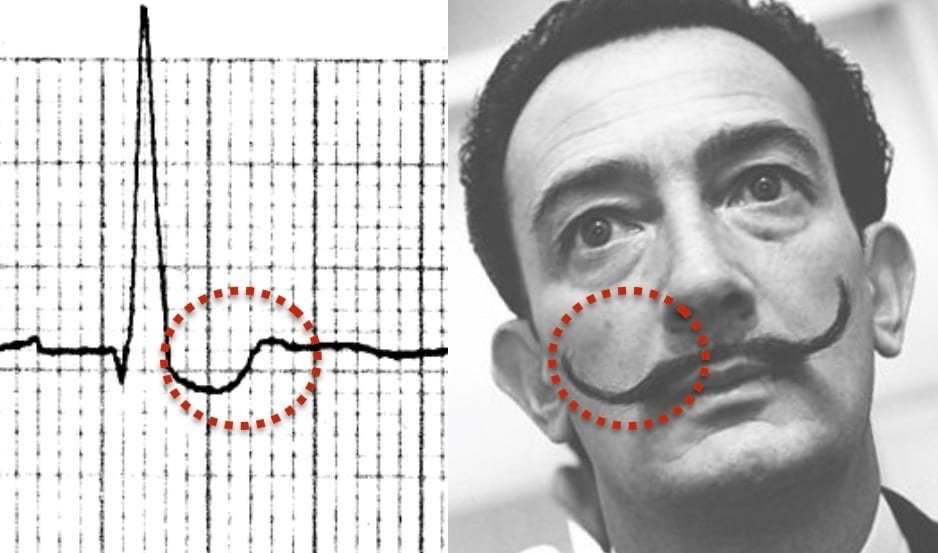
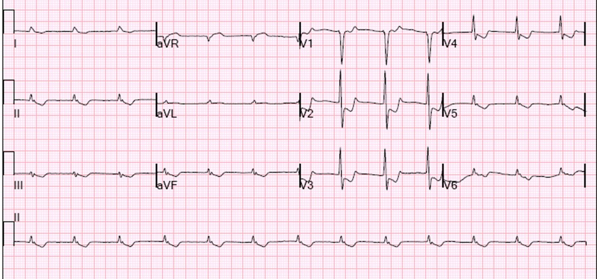
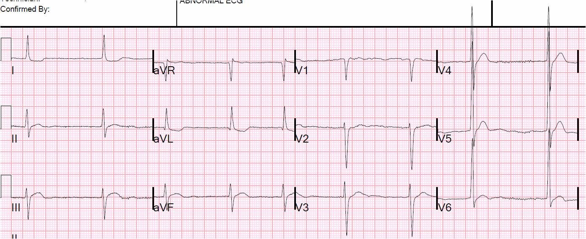
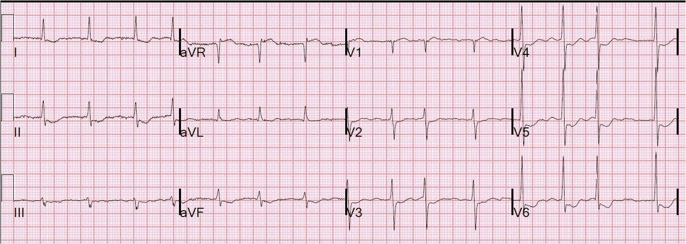
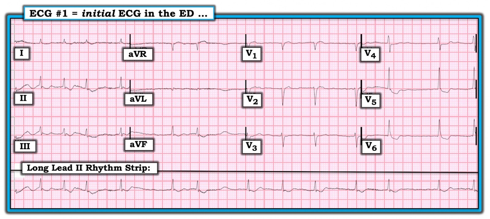
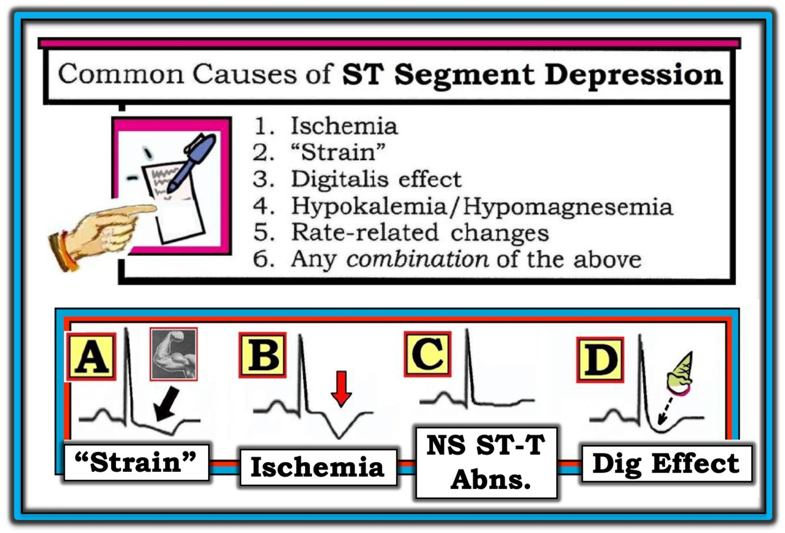

21/10/2019 — ST chênh xuống này có phải do “thiếu máu cục bộ thành bên”?
Bản dịch tiếng Việt của bài "Is this ST depression due to “lateral ischemia”?" – Dr. Smith’s ECG Blog. Giữ nguyên toàn bộ 9 hình ảnh của bản gốc.
Bệnh nhân này vào viện vì suy tim cấp, có tiền sử suy tim và rung nhĩ:


Bạn nghĩ sao?
Có rung nhĩ với tần số thất được kiểm soát. Có ST chênh xuống dạng lõm (scooped) ở II, III, aVF và đặc biệt ở V5, V6.
Có 4 nhóm nguyên nhân gây ST chênh xuống khi QRS bình thường:
1. Thiếu máu cục bộ
2. Hạ kali máu
3. Thuốc digoxin
4. Biến thể nền/không bệnh lý
–Khi khoảng QT rất ngắn, hãy nghĩ đến digoxin.
–Khi bệnh nhân bị rung nhĩ với tần số thất được kiểm soát, không phải là không có khả năng bệnh nhân đang dùng Digoxin để kiểm soát tần số.
–Khi ST chênh xuống có dạng mà tôi gọi là “lõm” (“scooped”), hãy nghĩ đến Digoxin.
Khi tôi gợi ý đây là nguyên nhân có khả năng của ST chênh xuống và hỏi xem bà ấy có đang dùng Digoxin không, bác sĩ nội trú nói: “Cái đó cổ lỗ sĩ quá rồi” (“That is so old school”)!!
Vâng, hóa ra bà ấy đúng là đang dùng Digoxin, và không hề có thiếu máu cục bộ.
Tôi đưa bản ghi này, không kèm thông tin gì, cho một giảng viên độc chất học trẻ nhưng rất giỏi của chúng tôi và cô ấy lập tức nói “Dig”, chứng tỏ điều này không hề “cổ lỗ sĩ” (old school).
Cuối cùng, cần nhấn mạnh rằng đây là tác dụng của Dig (Dig effect) chứ KHÔNG phải ngộ độc Dig.
“Bộ ria mép của Salvador Dali”
Một số người đã ví ST chênh xuống dạng lõm do tác dụng của digoxin với “bộ ria mép của Salvador Dali” (dành cho các bạn còn trẻ, Salvador Dali là họa sĩ Siêu thực tiêu biểu nhất).
Hình này lấy từ Life in the Fast Lane. Tôi không chắc họ là người tạo ra nó. https://litfl.com/digoxin-effect-ecg-library/
- Steve — tôi tin rằng Dale Dubin là người đầu tiên phổ biến hình ảnh bộ ria mép của Salvador Dali để biểu thị hình dạng “lõm” (“scooped”) của tác dụng Digoxin (Ken Grauer, MD).


Một số bài viết thú vị khác về Digoxin:
Looks like a Posterior STEMI. Is it? (Trông giống STEMI thành sau. Có đúng vậy không?)


Có nhịp bộ nối gia tốc
Lưu ý ST chênh xuống đi kèm QT rất ngắn; do đó không thể là thiếu máu cục bộ
Coved ST elevation with reciprocal ST depression: what is the diagnosis? (ST chênh lên dạng vòm kèm ST chênh xuống soi gương: chẩn đoán là gì?)


Lưu ý QT rất ngắn
ST segment depression: what is the etiology? (Đoạn ST chênh xuống: nguyên nhân là gì?)



===================================
BÌNH LUẬN CỦA TÔI, bởi KEN GRAUER, MD (21/10/2019):
===================================
Bài viết xuất sắc của Dr. Smith nhằm làm nổi bật các nguyên nhân có thể gây ST chênh xuống trên điện tâm đồ. Dù ngay lập tức tôi cũng có cùng suy nghĩ ban đầu về ca này như Dr. Smith (tức là, “Bệnh nhân này có đang dùng Digoxin không?” ) — tôi muốn mở rộng thêm các bình luận của ông.
- Để rõ ràng — tôi đã đăng lại điện tâm đồ thứ 1 trong ca này (Hình 1).


Những điểm đáng chú ý khi diễn giải điện tâm đồ #1 gồm:
- Phân tích Mô tả các dấu hiệu trên điện tâm đồ: Nhịp trong điện tâm đồ #1 là AFib với đáp ứng thất khá chậm (tức là, tần số giảm xuống dưới 60/phút ở vài chỗ). Mọi khoảng đều bình thường (như Dr. Smith đã nêu — QTc trông ngắn). Trục mặt phẳng trán bình thường, ở +60 độ. Xung chuẩn bình thường — và rõ ràng không có dấu hiệu phì đại thất theo điện thế. Về Thay đổi Q-R-S-T — có sóng q vách nhỏ (ở các chuyển đạo aVL, V6) — vùng chuyển tiếp hơi muộn (xảy ra giữa V4 và V5) — với dấu hiệu đáng chú ý nhất là hình dạng của sóng ST-T.
- LƯU Ý #1: Điện tâm đồ này dường như đã được “diễn giải” là cho thấy “thiếu máu cục bộ thành bên”. “Diễn giải” này cho thấy một sự kết luận vội vàng (premature closure) về các khả năng chẩn đoán — vì vậy chẳng có gì lạ khi chẩn đoán đúng ban đầu đã bị bỏ sót. Chúng ta vẫn đang ở giai đoạn Phân tích Mô tả, chứ chưa phải “diễn giải”. Cách tôi sẽ mô tả hình dạng sóng ST-T trên điện tâm đồ này là có “bất thường sóng ST-T lan tỏa, không đặc hiệu” kèm theo (như Dr. Smith đã nêu) — đoạn ST “lõm” (scooping) với QTc ngắn, rõ nhất ở các chuyển đạo ngực bên.
- LƯU Ý #2: Không chỉ ở các chuyển đạo dưới-bên — hầu như tất cả các chuyển đạo trên bản ghi này (có lẽ trừ aVR và V1) đều cho thấy bất thường sóng ST-T (nếu không phải ST “lõm” — thì là sóng ST-T dẹt không đặc hiệu).
- Nhận định Lâm sàng: Diễn giải tối ưu cho điện tâm đồ #1 nên chỉ ra rằng có AFib với đáp ứng thất khá chậm + sóng ST-T dẹt không đặc hiệu, trong đó bao gồm đoạn ST “lõm” kèm QTc ngắn ở vài chuyển đạo. Sau đó cần Đối chiếu Lâm sàng để đánh giá thực thể nào (hoặc những thực thể nào) là (là các) nguyên nhân có nhiều khả năng nhất gây ra hình dạng sóng ST-T này (Hình 2).


Nguyên nhân gây Sóng ST-T Chênh Xuống: Thực ra có hơn 50 nguyên nhân gây thay đổi ST-T trên điện tâm đồ. Mặc dù nhiều nguyên nhân trong số này có liên quan đến tim — cũng có nhiều nguyên nhân không liên quan đến tim. Trong số rất nhiều nguyên nhân ngoài tim gây thay đổi ST-T có: tăng thông khí; nhiệt độ khắc nghiệt (tiếp xúc với nóng hoặc lạnh quá mức); lo âu hoặc căng thẳng cảm xúc; thiếu máu; nhịp tim nhanh; thiếu ngủ; bệnh phổi; rối loạn điện giải; rối loạn hệ thần kinh trung ương; một số thuốc; và bệnh nội khoa nặng (cùng nhiều nguyên nhân khác). Điểm MẤU CHỐT — Nhiều trong số hơn 50 nguyên nhân có thể gây bất thường sóng ST-T trên điện tâm đồ là nguyên nhân ngoài tim!
- ĐIỀU CỐT LÕI: Thay vì cố ghi nhớ một danh sách đầy đủ các tình trạng có thể dẫn đến thay đổi ST-T — chỉ cần nhận thức được sự đa dạng của các thực thể có thể gây ra thay đổi trên điện tâm đồ.
- LƯU Ý #3: Nhìn chung — các nguyên nhân gây bất thường sóng T (bao gồm sóng T dẹt hoặc sóng T đảo ngược rõ rệt) tương tự các nguyên nhân có thể gây đoạn ST chênh xuống.
Chúng tôi khuyên nên nhớ DANH SÁCH ngắn gồm các thực thể mà chúng tôi trình bày trong Hình 2. Mục đích của chúng tôi khi lập Danh sách này là để đơn giản hóa nhiệm vụ của bạn với tư cách người đọc điện tâm đồ. Ngay khi bạn nhận ra thay đổi ST-T lan tỏa trên một điện tâm đồ — hãy Xem xét DANH SÁCH ngắn gồm các Nguyên nhân Có thể trong Hình 2:
- LƯU Ý #4: Thường thì — có thể có nhiều hơn một nguyên nhân cùng tác động. Ví dụ — bệnh nhân trong ca này có tiền sử suy tim và AFib — nên có thể giả định rằng bệnh nhân này có lẽ đang dùng ít nhất vài loại thuốc. Do đó — bệnh nhân có thể đang dùng Digoxin và/hoặc thuốc lợi tiểu (có thể góp phần gây rối loạn điện giải). Bệnh nhân bị suy tim — nên các thay đổi ST-T bất thường có thể phản ánh “tăng gánh” thất trái (hoặc “tương đương tăng gánh” (strain equivalent)). Và mặc dù có tiền sử đau ngực gần đây — các thay đổi ST-T mà chúng ta thấy trên điện tâm đồ #1 có thể phản ánh thiếu máu cục bộ mạn tính. ĐIỀU CỐT LÕI — Ngoại trừ nhịp tim nhanh, mỗi nguyên nhân có thể khác gây sóng ST-T chênh xuống trong Hình 2 đều có thể góp phần ở các mức độ khác nhau vào bức tranh điện tâm đồ mà chúng ta thấy ở Hình 1.
ĐIỂM THEN CHỐT (PEARL): Hình dạng của sóng ST-T có thể gợi ý thực thể nào (hoặc những thực thể nào) trong 6 thực thể thuộc DANH SÁCH của chúng tôi là (là các) thực thể có nhiều khả năng đang tác động nhất ở một bệnh nhân cụ thể (Xem nửa dưới của Hình 2):
- Thiếu máu cục bộ — được gợi ý bởi sóng T đảo ngược đối xứng (mũi tên ĐỎ trong Ô B) — đặc biệt khi thấy ở hai hoặc nhiều chuyển đạo của cùng một nhóm chuyển đạo (tức là, ở các chuyển đạo II, III và aVF — hoặc ở cả hai chuyển đạo I và aVL). Thiếu máu cục bộ cũng có thể biểu hiện bằng đoạn ST dẹt hoặc chênh xuống — nhưng các thực thể khác cũng có thể tạo ra cùng hình ảnh này. Tuy nhiên, sóng T đảo ngược đối xứng thực sự ở 2 chuyển đạo trở lên trong một vùng chuyển đạo giải phẫu làm tăng khả năng nguyên nhân là thiếu máu cục bộ (cấp hoặc mạn tính).
- Tăng gánh — do LVH, được gợi ý bởi ST chênh xuống không đối xứng xảy ra ở một (hoặc nhiều) chuyển đạo bên (ít gặp hơn ở các chuyển đạo dưới). Lưu ý đoạn ST lúc đầu võng xuống từ từ khi có “tăng gánh” thất trái (mũi tên ĐEN trong Ô A) — rồi trở về đường nền nhanh hơn. “Tăng gánh” có nhiều khả năng là nguyên nhân gây ST chênh xuống hơn khi có tiêu chuẩn điện thế của LVH trên điện tâm đồ. LƯU Ý #5: Đôi khi, có thể có thất trái lớn đã được xác nhận bằng siêu âm tim kèm thay đổi ST-T gợi ý “tăng gánh” trên điện tâm đồ — nhưng không kèm tiêu chuẩn điện thế. Điểm này có thể liên quan đến bệnh nhân trong ca này — vì sóng ST-T chênh xuống không đối xứng rõ nhất ở các chuyển đạo bên ở bệnh nhân suy tim mạn tính này (tình trạng dễ dẫn đến lớn thất trái) — nhưng bệnh nhân lại không thỏa bất kỳ tiêu chuẩn điện thế nào của LVH trên điện tâm đồ #1.
- “Tăng gánh thất phải” — được gợi ý NẾU hình ảnh ở Ô A của Hình 2 xuất hiện ở các chuyển đạo bên phải (các chuyển đạo II,III,aVF; hoặc V1,V2,V3) ở bệnh nhân có RVH.
Việc dùng Digoxin có thể ảnh hưởng đến sóng ST-T theo bất kỳ một trong 3 cách: i) Có thể có ST chênh xuống “dạng lõm” ở nhiều chuyển đạo (trông giống một chiếc ốc quế kem úp ngược, như trong Ô D của Hình 2). Hình ảnh này thường đi kèm QTc tương đối ngắn; hoặc, ii) “Tác dụng” của digoxin có thể tạo ra hình ảnh giống “tăng gánh” (giống hệt Ô A); hoặc, iii) Dù đã dùng Digoxin với liều phù hợp — có thể hầu như không có tác động gì lên sóng ST-T.
- LƯU Ý #6: Theo kinh nghiệm của tôi (từ việc đối chiếu hình dạng sóng ST-T trên điện tâm đồ với nồng độ Digoxin huyết thanh trong suốt 3 thập kỷ tôi làm việc chặt chẽ với các dược sĩ lâm sàng (PharmD) tại cơ sở của chúng tôi) — nồng độ Digoxin huyết thanh tương quan kém với mức độ lõm hoặc chênh xuống của sóng ST-T. Do đó, dù nồng độ Digoxin huyết thanh thậm chí cao — một số bệnh nhân vẫn không biểu hiện bất thường sóng ST-T — trong khi những bệnh nhân khác lại có thay đổi ST-T rõ rệt dù nồng độ Digoxin huyết thanh thấp đến ngạc nhiên.
Cuối cùng — Ô C trong Hình 2 cho thấy hình ảnh sóng ST-T không đặc hiệu, trong đó sóng T và đoạn ST bị dẹt (nếu không phải là hơi chênh xuống). Hình ảnh này được gọi là “không đặc hiệu” — vì bất kỳ nguyên nhân nào trong số nhiều nguyên nhân có thể gây bất thường sóng ST-T đều có thể đang tác động.
ĐIỀU CỐT LÕI (về các thay đổi ST-T trên điện tâm đồ #1 của ca này) = Cần đối chiếu lâm sàng:
- Như Dr. Smith đã nêu — hình dạng đoạn ST “lõm” ở vài chuyển đạo (rõ nhất ở các chuyển đạo III, V5, V6) cùng QTc bị rút ngắn rõ rệt khiến việc hỏi xem bệnh nhân có đang dùng Digoxin hay không trở thành ưu tiên thứ 1.
- Dù vậy — các thực thể khác trong DANH SÁCH ở Hình 2 cũng nên được xem xét — vì chúng có thể đang góp phần vào các thay đổi ST-T mà chúng ta thấy. Rà soát danh sách thuốc của bệnh nhân — các giá trị điện giải huyết thanh (đặc biệt là K+ và Mg++ huyết thanh) — và lấy một điện tâm đồ cũ để so sánh đều sẽ hữu ích.
- Điều “tin tốt” trong ca này — là các thay đổi ST-T mà chúng ta thấy trên Hình 1 không có vẻ cấp tính. Khi không có tiền sử đau ngực mới khởi phát đáng lo ngại — rất khó có khả năng ST chênh xuống trên điện tâm đồ #1 phản ánh thiếu máu cục bộ cấp.